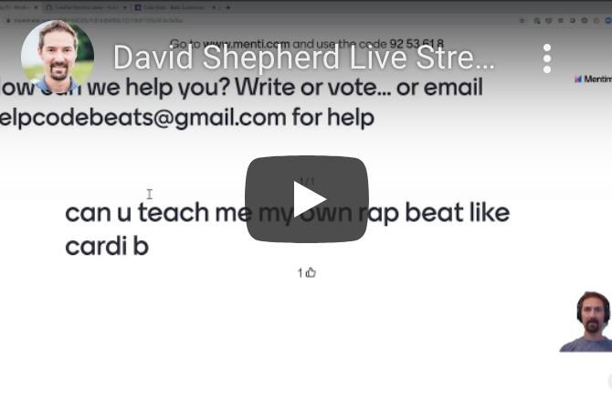
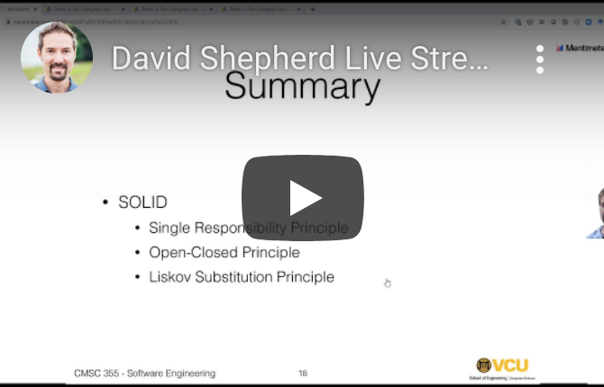

Student Feedback from Our Program
"This was a very engaging, fun and enlightening experience"
"It was cool to sit in the class and learn something I did not know about."
"I wish this was not the end. I would love to see VCU expand the program."
"Very Informative and useful information that could be career changing"
"I really enjoyed learning and having fun in this class. It was a pleasure working with everyone. I like how the activities are fun and how there is a cool project at the end to showcase our hard work and efforts."
"I am glad I took this class, because I know so much more about coding and making a melody and a rhythm using a coding language."
"Great introductory class! Love that you can go back to view a missed session!"
"It was a good mix of lecture style with live instructor and those by video. I'm also glad there was a hands-on portion during class. Although I didn't attend the extra help sessions, it was also great to have that option."
“I wanted to learn code and I love rap”
"i love coding and music and my best friend is also joining. I have been playing drums my entire life. seriously its true."
“Because my dad is a software developer, i like coding, and i love piano.”
"I joined this "class" because I love coding and I love different kinds of beats and music. This is perfect!"
"For fun and also learning to code with music. Also I love music so I was like why not make it. I went to the apple store and just made my beats with garage band"
"I’m very interested in beats like dr.dre and I saw this so I want to make or create beats"
"I wanted a fun way to earn coding badges for girl scouts."
"Because I have had experience with JavaScript and Python, and ply 4 different instruments and I think this class ties it in pretty well."
"I make rap and hip hop beats on garage band and if I want to make a beat, other people have to dig it so I can get advice"
“I love coding and music, so code music is my thing!”
Check Out a Few Classes!

